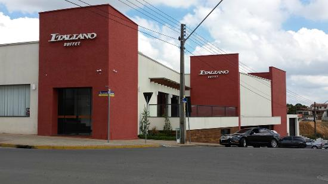
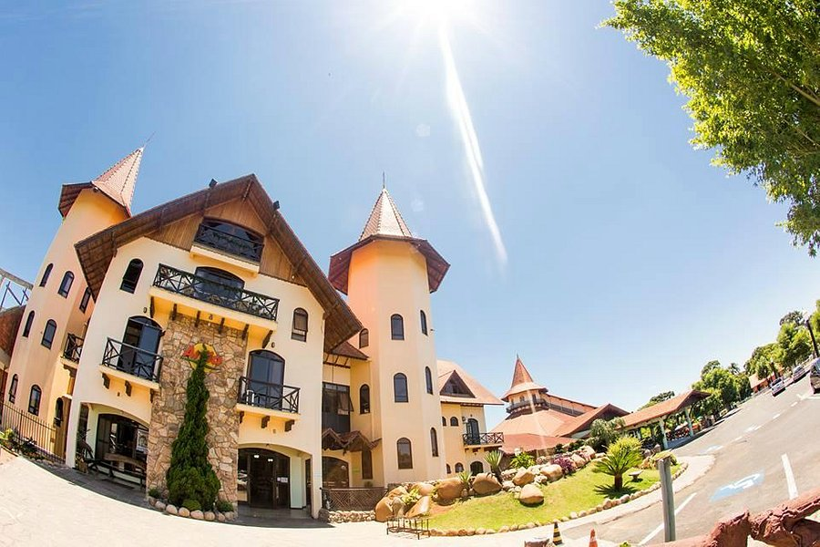

Um Lugar calmo e relaxante para passar um fim de noite.
É o restaurante mais famoso da cidade, sendo restaureante, lanchonete e churrascaria, procurado bastante para eventos de aniversarios, casamentos, formaturas...
Tendo varias comidas tipicas da cidade, variaveis lanches, bebidas e sobremesas, sua valição é em media 4.7.

É um pesque pague, que tem varias comidas diferentes envolvendo frutos do mar, e outras variedades, como rans, sapos, camarão, peixes, etc..
Um Lugar calmo e relaxante para passar um fim de noite.
Um restaurante na br indo para curitiba, muito famoso, varias pessoas de diferentes regiões vão lá, não é apenas um restaurante, tambem é um hotel, e um lugar super bonito para aproveitar uma tarde de domingo ensolarado, um ponto turisco, e muitas pessoas tiram fotos para eventos lá.As comidas tipias da região e diferentes outras, uma variedade de bebidas e sobremesas.Uma caracteristica importante a se destacarr é que eles produzem queijo.

Algumas das Lanchoneste mais famosas são: